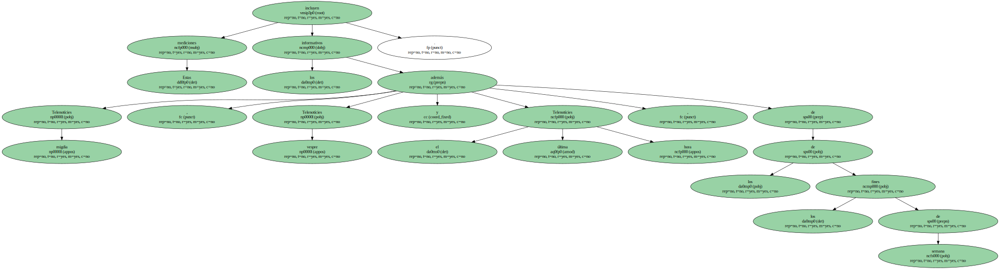

Jordi Pujol apareció en los informativos de TV-3 durante el mes de julio durante un total de 36 minutos y 50 segundos, mientras que el tiempo destinado a Pasqual Maragall fue de 15 minutos y 20 segundos.
Son datos de Sofres, la empresa que realiza las mediciones de audiencia de la Corporació Catalana de Ràdio i Televisió (CCRTV).
El resto de candidatos a las próximas elecciones catalanas se repartieron así las apariciones en la televisión pública catalana: Rafael Ribó, de Iniciativa per Catalunya-Verds, acaparó 11 minutos y 29 segundos ; Alberto Fernández Díaz, presidenciable del PP, 11 minutos exactos, mientras que el de ERC, Josep Lluís Carod-Rovira, ocupó nueve minutos de pantalla.

Estas mediciones incluyen los informativos Telenotícies migdia, Telenotícies vespre y el Telenotícies última hora, además de los de los fines de semana.
Iniciativa-Verds ya publicó recientemente un estudio en el que abordaba el mismo asunto y en el que también se concluía con que la presencia de Pujol era muy superior a la de Maragall.
El candidato socialista, a través de su oficina de campaña, y el PSC han reclamado en las últimas semanas a la dirección de TV-3 que corrija su política informativa por considerar que promociona de forma "sistemática" al president y margina al resto de aspirantes a la presidencia de la Generalitat.